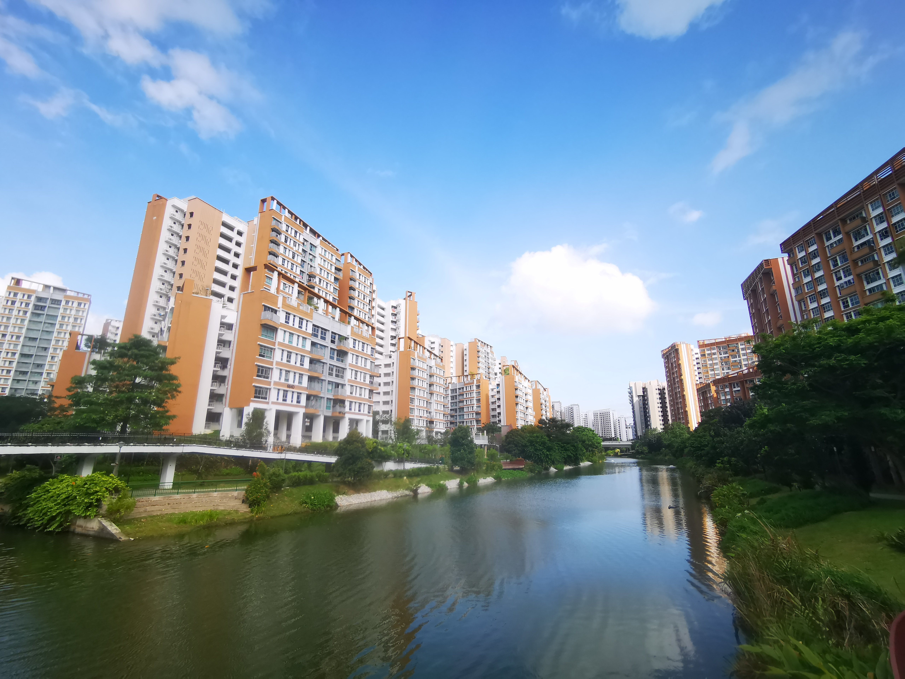
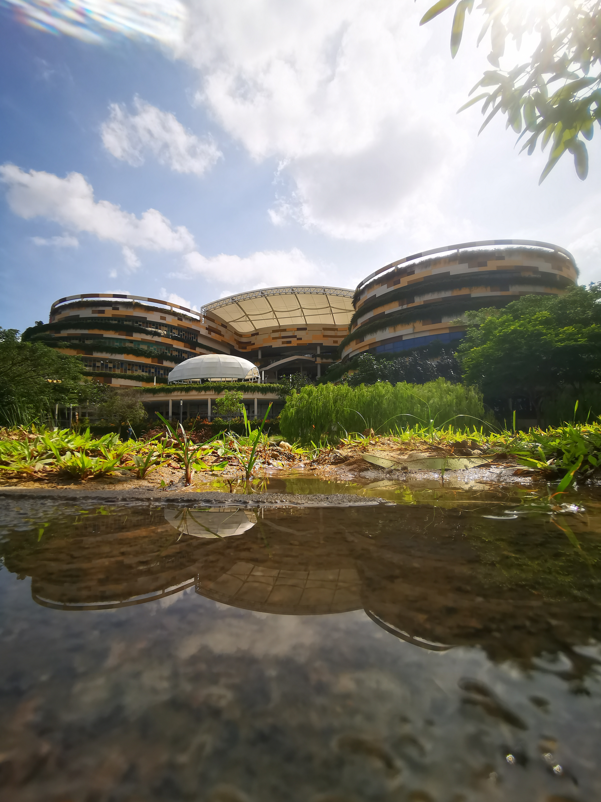

Located near Punggol MRT Station and Punggol Waterway Point, Punggol Waterway Park is a place in the North-East of Singapore where one can get to experience nature while still being connected to civilisation.
PLAY
At Punggol Waterway Park, many facilities
are available for all to enjoy and play! For families with young children or those young at heart 😏 😏 😏 ,
here are some places you can come to while at Punggol Waterway Park!!!
Water Play Area
Sand Play Area
Come down to enjoy all these different facilities!
Be sure to stay hydrated when playing and don't get injured!
Play and interact with caution, wear a mask when done playing!
RELAX
What would a park be without nature and its beauty?
Immerse yourself into the beautiful environment and its surroundings!!!
As you journey along the path, be prepared to enjoy all the different views Punggol Waterway
Park has to offer.
From nature to civilisation, get ready your cameras to take pictures of yourself and the place!!
Just a few of the many attractive views you can get to see!

Look at the flowers blooming!
Unexpected find! Even Punggol's history are shown on the walkways by using murals. Come down to discover more of these!


Look at this building! What could it be? 🤔
Scroll down to find out!
EXERCISE
Why not take the time to do some exercise as well while
enjoying the scenery? 🏃 🏃
From jogging to cycling, break a sweat as you share the path with friendly residents of Punggol!
Here's a short video to let you have a glimpse of what you could get to experience!
WHERE TO NEXT?
You might be done with Punggol Waterway Park, but rest
assured that we have you covered!
One great thing about Punggol Waterway Park is that it is connected to lots of places, for you to unwind after a long day.
Waterway Point
Fancy dinner at a shopping mall? Why not visit Waterway Point, Punggol's very own suburban shopping mall! With many shops and restaurants, this place won't make you disappointed.
Oasis Terraces
Feel like going somewhere only known mostly by Punggol Residents? Try out Oasis Terraces then, HDB's first New-Generation Neighbourhood Centre offering a wide array of amenities!
Punggol SAFRA
Now, the place that was left a mystery earlier.
We have *drum roll* *drum roll* *drum roll* Punggol SAFRA!!! Housing many facilities for recreation, and also places to fill your bellies,
you can't go wrong with this as well!
Punggol Container Park
Last but definitely not the least, Punggol Container Park!!
This place is well known for being a wonderful location for people to chill and relax,
with the many F&B outlets for patrons to choose from.
For those who love alcohol, this is one of the best places you can find in Singapore to drink with your friends! 🍻🍻🍻
DIRECTIONS
Now that you have seen Punggol Waterway Park and all of its amazingness, now it is time for you to travel down here to experience all this place has to offer!!!
Closest MRT Station: Punggol MRT Station
Closest Bus Interchange: Punggol Bus Interchange
Come now, what are you waiting for? Let's go!!!
Back to Top